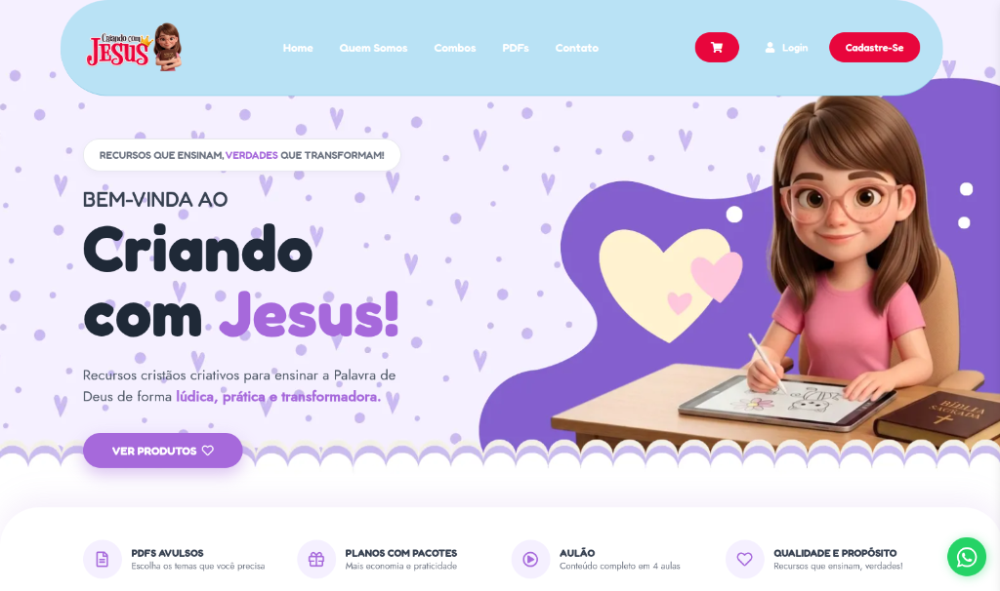
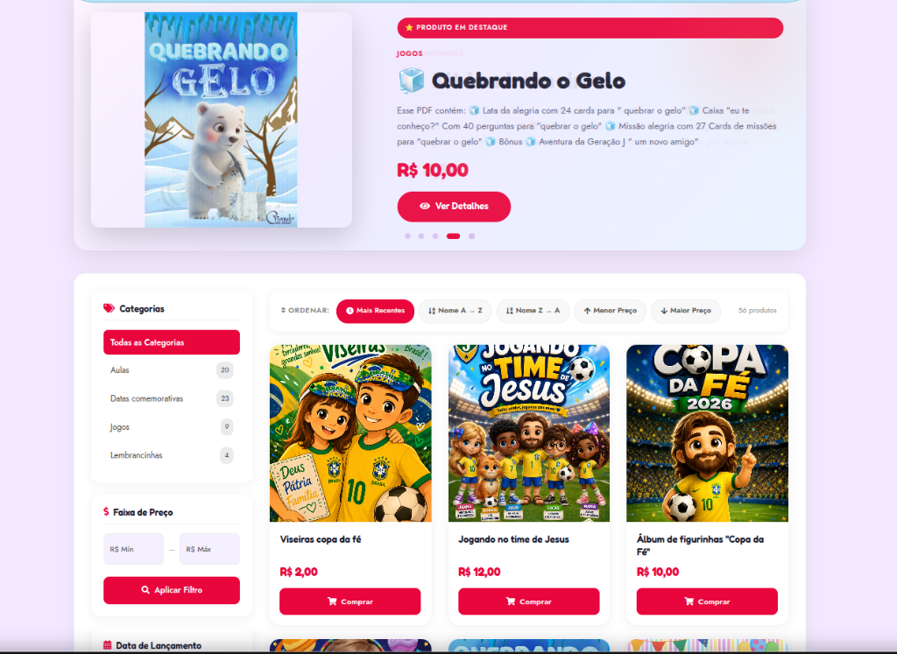
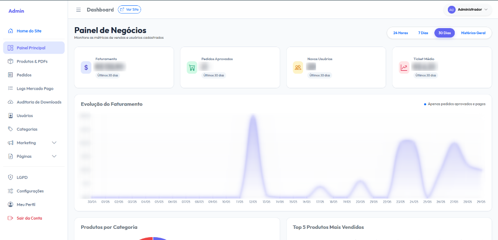
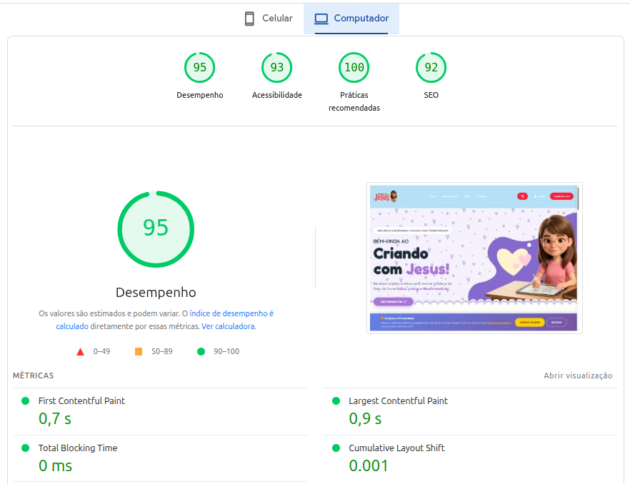

Criando com Jesus
Plataforma digital integrada de comércio eletrônico de ensino cristão familiar, focada em estabilidade sob carga e carregamento abaixo de 1 segundo.

Ficha Técnica
Cliente
Criando com Jesus
Tecnologias
Serviços Prestados
- Engenharia de Software
- Banco de Dados Relacional
- Design Engineering (Bespoke)
- Checkout de Alta Performance
dangerous O Desafio
O cliente necessitava de uma plataforma que integrasse um catálogo de e-commerce de materiais digitais, com a área administrativa para gerenciamento. A solução anterior sofria de lentidão crônica de banco de dados, falhas e dependência excessiva de plugins vulneráveis em plataformas CMS (WordPress) comuns, o que causava perdas diretas nas vendas.
check_circle A Solução Desenvolvida
Em vez de recorrer a construtores pesados de sites, a DL Tech desenvolveu um sistema **100% sob medida em PHP puro e MariaDB**. O front-end foi construído de forma limpa, priorizando semântica e tempo de renderização acelerado.
Estruturamos um checkout otimizado sem fricção, onde o usuário realiza a compra com poucos cliques. Toda a lógica de persistência e segurança foi implementada no banco de dados MariaDB com tabelas indexadas e queries limpas, prevenindo injeções de código e reduzindo latências críticas do servidor.
Catálogo de PDFs

Painel Administrativo

monitoring Resultados de Impacto
< 1.0s
Tempo de Carga
Zero
Plugins Quebrados
+40%
Taxa de Conversão
Com a eliminação da sobrecarga do WordPress e o desenvolvimento em PHP puro, o site alcançou notas máximas no Google Lighthouse (Core Web Vitals). A segurança do sistema foi estabilizada e a velocidade resultou em um crescimento direto e mensurável na conversão de vendas e inscrições.
speed Auditoria Google Lighthouse Real
Desempenho de EliteMétricas oficiais extraídas diretamente da auditoria do Google Chrome, comprovando o desempenho excepcional e as práticas recomendadas de ponta do portal Criando com Jesus.
